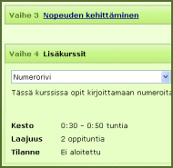

Nopeuden kehittäminen
(6 oppituntia)
Tämän kurssin avulla voit kehittää kirjoitusnopeutta ja sujuvuutta. Kurssi sisältää liikerataharjoituksia eri sormille, yleisimpien sanojen treenausta ja pidempiä tekstejä.
Numerokurssi (2 oppituntia)
Tässä kurssissa opit hallitsemaan numerorivin kymmensormitekniikalla.
Erikoismerkit (4 oppituntia)
Tämän kurssin jälkeen kirjoitat sujuvasti erikoismerkit, kuten matemaattiset symbolit ja sulkeet.
Numeronäppäimistö (3 oppituntia)
Kirjoita numerosarjoja tehokkaasti erillisellä numeronäppäimistöllä.